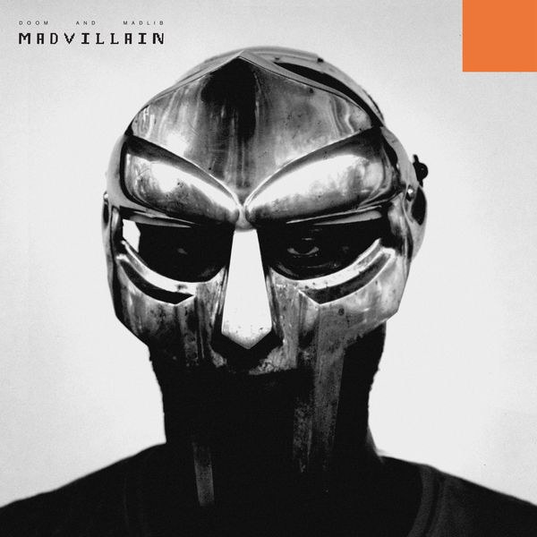
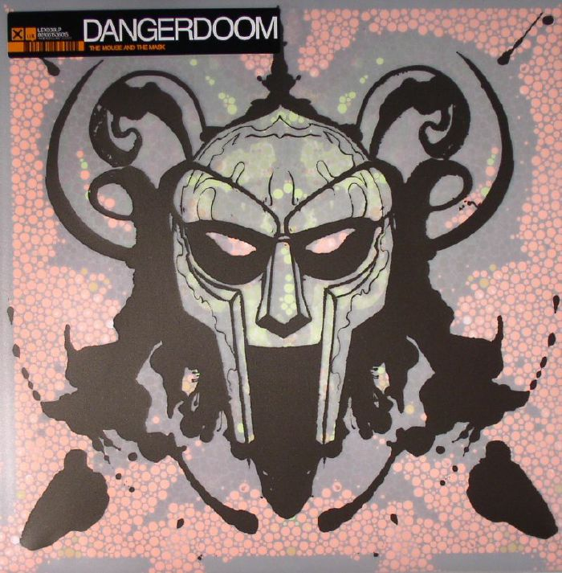
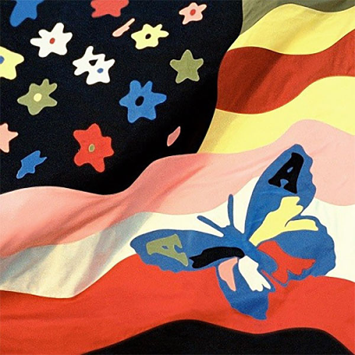

Dumile followed his rise to fame (at least on an underground level) by collaborating with very different artists, not all of them belonging to the hip-hop world. His figure is still a mistery for most, giving few interviews over the years, and staying off the grid for the most part (so hard to reach that some of his colleagues have sometimes complained jokingly of how hard it is to be in contact with him). Nevertheless, that aura of mistery hasn't stopped him from releasing music and art projects at an constant rate, and maintaining a very high quality.
Among his most known collaborations are Madvillainy, a duo album with producer Madlib, considered by many one of the best hip-hop albums ever, and specially in the 21st century, due to its superb production and clever rhymes; The Mouse and the Mask, a record with producer Danger Mouse (the duo named themselves) DANGERDOOM, a collaboration with Gorillaz in their album Demon Days (the track, November Has Come, became an instant hit), or with renowned Australian group The Avalanches on their second album, Wildflower.
 | Daniel Dumile's Discography | ||
|---|---|---|
| Release | Artist | Year |
| Mr. Hood | KMD | 1991 |
| Black Bastards (bootleg) | KMD | 1993 |
| Operation: Doomsday | MF DOOM | 1999 |
| Take Me To Your Leader | King Geedorah | 2003 |
| Vaudeville Villain | Viktor Vaughn | 2003 |
| MM.. Food | MF DOOM | 2004 |
| Special Herbs Volume 1 & 2 | MF DOOM | 2004 |
| Madvillainy | Madvillain (MF DOOM & Madlib) | 2004 |
| November Has Come (track from Gorillaz's Demon Days) | Gorillaz & MF DOOM | 2005 |
| Born Like This | MF DOOM | 2009 |
| Frankie Sinatra | The Avalanches & MF DOOM | 2016 |
| Czarface Meets Metal Face | Czarface & MF DOOM | 2018 |